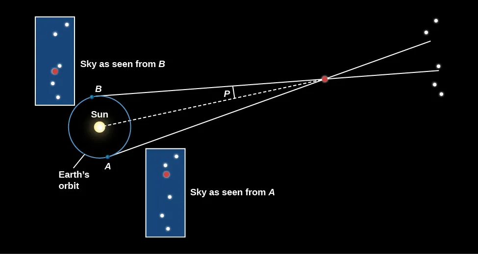

Reading Anchor
OpenStax Astronomy 2e, Chapter 1.4 on astronomical scale and Chapter 19.2 on stellar parallax and distances. The local textbook reference is stored at references/openstax-astronomy-2e.pdf. These notes use the textbook for scope and terminology while presenting original explanations and examples.
Lecture Arc
Astronomy studies objects too far away to touch. Distance measurement therefore relies on geometric baselines, calibrated relationships, and careful uncertainty accounting.
The lecture should begin by asking students what can be observed directly. Only after that should the explanatory model be introduced. This helps students distinguish evidence from interpretation, a distinction that becomes essential when the course moves from the night sky to stars, galaxies, and cosmology.
Key Vocabulary in Context
The important terms for this lecture are: astronomical unit, light-year, parsec, parallax, baseline, standard candle, order of magnitude. Each term should be introduced through use. Students should be able to write a sentence using each term to describe an observation or explain a model, rather than merely define it from memory.
Evidence Table
| # | Evidence or observation | How students should interrogate it |
|---|---|---|
| 1 | Nearby stars shift position slightly against distant background stars over Earth's orbit. | What measurement, image, spectrum, or sky observation would support this? |
| 2 | Light travel time gives a physical meaning to distance. | What measurement, image, spectrum, or sky observation would support this? |
| 3 | Different distance methods overlap, creating a distance ladder. | What measurement, image, spectrum, or sky observation would support this? |
Model Development
The model for this lecture has three linked parts:
- Trigonometric parallax is direct geometry for nearby stars.
- A parsec is defined by a parallax angle of one arcsecond.
- Order-of-magnitude checks catch impossible claims before detailed calculation.
The instructor should emphasize where the model is a simplification. Introductory astronomy often works by adopting a useful first model, identifying its assumptions, and then refining it when new evidence demands more detail.
Quantitative Reasoning
This equation or proportionality is not just a formula to memorize. It is a compact statement of a physical or geometric relationship. A strong student solution defines each symbol, states the unit system, identifies the assumptions, and interprets the result in words.
Worked Example
- A star with parallax 0.050 arcsec has distance 20 pc.
- Using 1 pc = 3.26 ly, this is about 65 ly.
- If the parallax uncertainty is 0.005 arcsec, the fractional uncertainty is about 10 percent.
After completing the calculation, students should ask whether the result is plausible. A numerical answer without a reasonableness check is not yet a scientific conclusion.
Visual Interpretation

Parallax turns a measured angular shift across Earth's orbital baseline into an inferred stellar distance. Credit: OpenStax Astronomy 2e, Fig. 19.6, CC BY-NC-SA 4.0.
Misconception and Boundary Condition
The correction should not be presented as a slogan. It should be tied to the evidence and model from this lecture. Students should practice saying what would be different if the misconception were true.
Active Learning Plan
Students rank Earth-Moon, Sun-Earth, nearest star, Milky Way diameter, and observable-universe scale on a logarithmic axis.
A suggested timing is 2 minutes individual prediction, 3 minutes peer comparison, and 3 minutes whole-class synthesis. The point is to make students commit to a model before seeing the instructor's full explanation.
Lab or Observing Connection
Lab 03 uses a classroom parallax baseline and a scale-model activity.
Students should see the lab as a continuation of lecture reasoning. The lab does not merely demonstrate a concept; it asks students to collect, interpret, or critique evidence with uncertainty.
Synthesis and Study Questions
Every later physical claim depends on distance: luminosity, size, mass, and age all inherit distance uncertainty.
- What was the central observation or evidence pattern?
- What model explains it, and what assumptions does the model make?
- Where did quantitative reasoning constrain the claim?
- What uncertainty, limitation, or misconception remains important?
References
- OpenStax, Astronomy 2e: OpenStax Astronomy 2e, Chapter 1.4 on astronomical scale and Chapter 19.2 on stellar parallax and distances.
- Course reference log:
../reference-log.md.